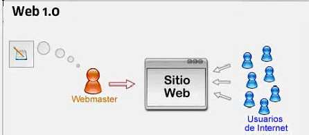

| 1990-2000 |
2000-2010 |
2005-2020 |
2015-2030 |
| WEB 0.1 The wed |
WEB 0.2Web Social |
WEB 0.3Wed Semántica |
WEB 0.4Web Ubicua |
| Pocos productores de contenidos |
Segunda generación de Web basada
en comunidades de usuarios . |
Es considerada también como una extensión de Web Semántica |
Es el próximo gran avance y se centra en ofrecer un comportamiento más inteligente, más predictivo |
| Muchos lectores de estos contenidos |
Se pasa de una web informativa, creada por expertos
a una web social, donde cualquiera puede participar
fácilmente./td>
| Trata de poder enriquecer la comunicación mediante metadatos semánticos (ontologías) que aportan un valor añadido a la información, la diferencian y la hacen más inteligente. |
Esta nueva versión de la red se basa en explotar toda la información que ahora mismo contiene, pero de una forma más natural y efectiva. |
| Paginas estáticas |
Paginas dinámicas |
Son abiertos, de bajo coste y se utilizan con sentido |
Se desarrollen de agentes personales inteligentes |
| La actualización de los sitios no se realiza en forma
periódica. |
Es una técnica de desarrollo web que combina
varias tecnologías |
los contenidos ahora ya no son tratados por su sintáctica sino por su semántica. |
Las aplicaciones de web ubicua podrán identificar recuersos y gestionarlos dentro del contexto de sesiones temporales o duraderas |
| 
|

|

|
|